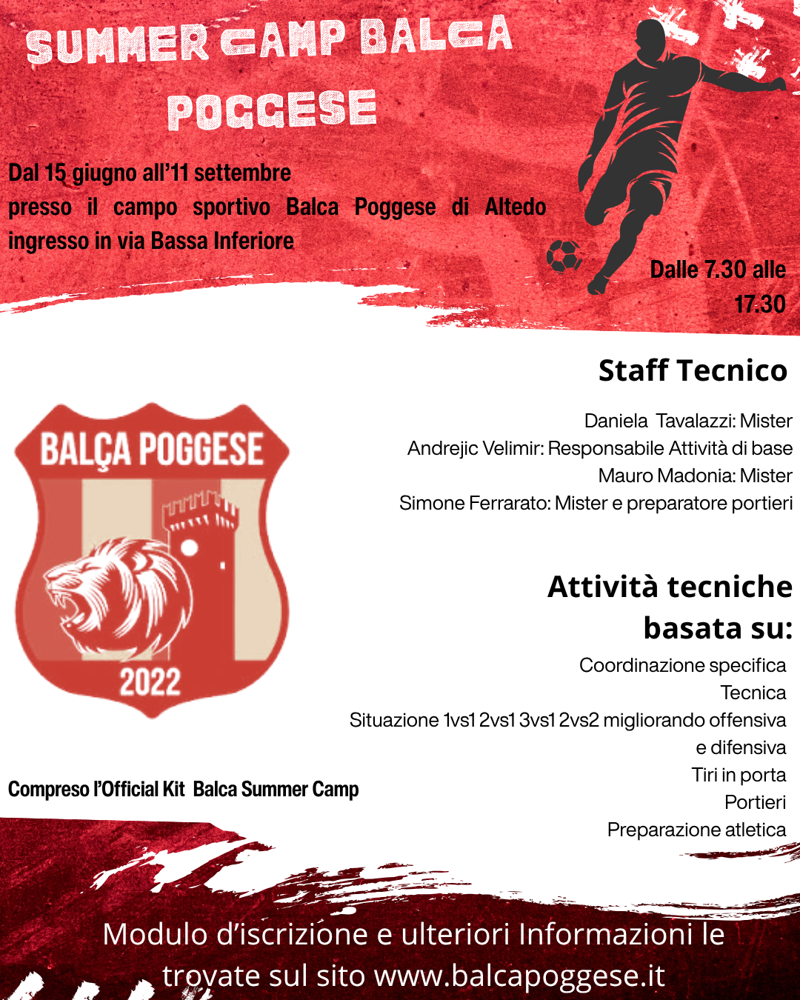
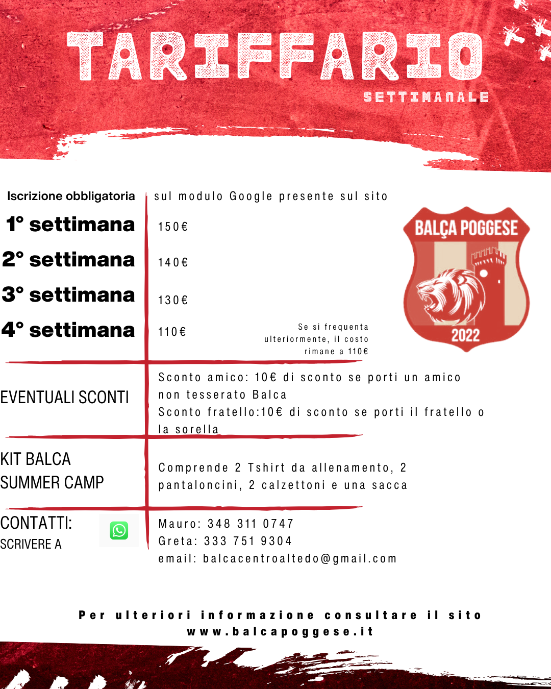

| ORARIO | PROGRAMMA |
|---|---|
| 7:30 - 9:00 | Accoglienza (Ingresso scaglionato) |
| 9:00 - 9:15 | Appello e divisione gruppi |
| 9:15 - 10:15 | Scaldiamo i muscoli! Primo allenamento |
| 10:15 - 10:45 | Pausa merenda e gioco libero |
| 10:45 - 12:00 | Fuori gli scarpini! Secondo allenamento |
| 12:00 - 13:45 | Pausa pranzo e relax! |
| 13:45 - 15:00 | Attività strutturata |
| 15:00 - 16:45 | Allenamento pomeridiano e tornei! |
| 16:45 - 18:00 | Pausa merenda e saluti! |


Programma tecnico
Il cuore del Camp sono gli esercizi tecnici mirati e allo sviluppo del gioco di squadra che vengono svolti sotto
la guida attenta di veri professionisti del settore. Tra i nostri esperti, avremo il piacere di
avere la supervisione di Daniela Tavalazzi,
un nome di eccellenza che garantirà qualità e competenza in ogni sessione di allenamento.
Qualora ci fosse mal tempo, il team attuerà una serie di attività specifiche in Indoor quali:
Tornei "da tavolo": Gare di calcio balilla, ping-pong o giochi di società per mantenere vivo lo spirito competitivo.
Teoria e Tattica: Sessioni interattive dove gli istruttori spiegano i segreti del calcio, magari guardando insieme video di grandi giocate o analizzando le regole del gioco.
Laboratori Creativi: Attività manuali, come la personalizzazione di una maglietta o la creazione di cartelloni sulla propria squadra del cuore.
Cinema e Quiz: Proiezione di film a tema sportivo o divertenti "quizzoni" a premi sulla storia del calcio e dello sport.